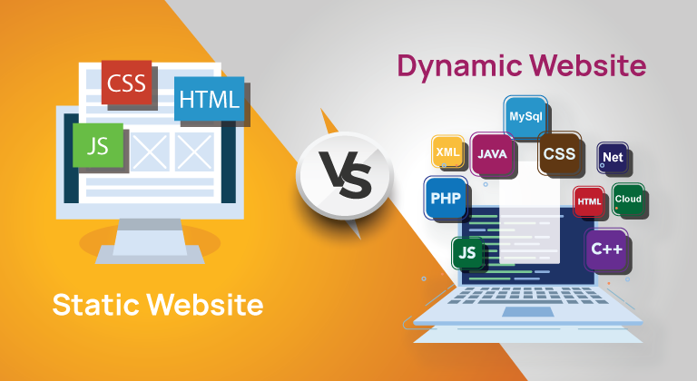
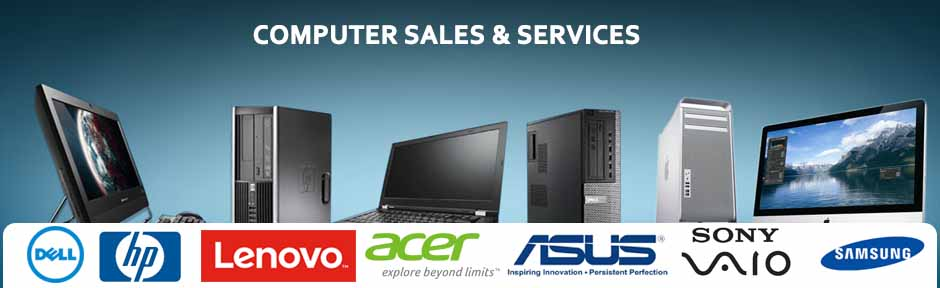

24/7 Customer Service
- Our service engineers are highly skilled and experienced professionals who specialize in our products. They are equipped to handle front-end and back-end issues, ensuring a comprehensive solution to your needs.
- With 24/7 service, you can access our expert engineers at any time, day or night. Whether it's a technical challenge, software configuration, or integration support, our team is just a call or click away.
- We understand that successful product integration is crucial for your business. Our engineers work closely with you to ensure seamless integration, minimizing disruptions and maximizing efficiency.
- Our engineers are trained to diagnose and resolve issues swiftly. We understand that time is of the essence, and our goal is to minimize downtime and keep your operations running smoothly.
- Our back-end support includes proactive monitoring of your systems to identify potential issues before they become critical. This proactive approach helps prevent problems and ensures stability.
- Your business is unique, and so are your product requirements. Our engineers provide tailored solutions to meet your specific needs, helping you get the most out of our products.
- Your feedback is invaluable to us. We actively seek your input to enhance both our products and the services provided by our engineers, ensuring a continually improved experience.

Static Website design & services
- Our static website design services focus on creating clean and simple web pages that load quickly and efficiently.
- We specialize in static website development, providing cost-effective solutions for businesses looking to establish an online presence.
- With our static websites, you can showcase your products or services effectively, providing essential information to your audience.
- Our team ensures that your static website has a professional and polished appearance that aligns with your brand's identity.
- We offer static website maintenance packages to keep your site up-to-date and secure, ensuring a seamless online experience for your visitors.
Dynamic Website design & services
- Our dynamic website design services involve building websites with interactive features, such as user registration, comment sections, and real-time updates.
- We excel in dynamic website development, creating engaging platforms for e-commerce, social networking, and more.
- With our dynamic websites, you can provide personalized experiences to your users through features like user accounts and dynamic content generation.
- Our team utilizes advanced scripting languages and databases to power your dynamic website, ensuring robust functionality.
- We offer ongoing dynamic website maintenance and support, ensuring your site remains responsive and bug-free as your business evolves.
- Trust us to deliver dynamic website solutions that enhance user engagement and drive conversions, tailored to your specific requirements and objectives.

Data Migration
- Our database migration experts engineer custom tools to facilitate the seamless transfer of data from one database platform to another, ensuring a precise and efficient transition.
- Leveraging our proprietary database migration software, we automate complex data transformations, meticulously mapping and preserving data integrity throughout the migration process.
- With our custom database migration tools, we adeptly manage schema conversions and handle large datasets, guaranteeing data consistency and accuracy.
- Our team's proficiency in crafting custom solutions enables us to address specific challenges, optimize performance, and minimize downtime during the database migration.
- Trust us to deliver secure and efficient database migrations using our custom tools, ensuring your data remains accessible and reliable in its new environment.
Manual
- Our manual database migration services involve a hands-on approach, with our skilled database professionals overseeing the entire migration process to ensure data integrity and precision.
- Each data element is meticulously reviewed, transformed, and validated to meet your unique requirements, including schema adjustments, data cleansing, and data quality checks.
- Manual database migrations allow us to thoroughly clean and refine your data, ensuring that only high-quality information is seamlessly transferred to the target database system.
- We provide comprehensive data validation and reconciliation during manual database migrations, meticulously verifying the correctness and completeness of the migrated data.
- Choose our manual database migration expertise when you need a personalized and thorough approach, especially for complex schema conversions or critical data integrity preservation during the migration process.

Hardware Sales
- We offer customized computers built to your exact specifications
- We employ an efficient evaluation process to build computers that meet your performance expectations
- We are dealing with all kinds of assembling computers
- We offer branded desktops and all-in-one computers from Dell, HP, Lenovo, Acer, and more with the latest configurations.
- We offer branded printers and all-in-one printers from Epson, HP, canon and more with the latest configurations.
- We offer Quick Heal antivirus for both server and client versions.
- We offer Softland android & button type machine for daily collection, pay & park etc.
Hardware Services
- Our experienced technicians specialize in computer hardware installation, ensuring that your new components are seamlessly integrated into your system for optimal performance.
- We provide on-site hardware installation services, saving you the time and effort of setting up your new equipment and ensuring it's done correctly.
- Whether it's upgrading your RAM, installing a new graphics card, or adding storage, our hardware installation team is equipped to handle all your needs.
- We offer hardware diagnostics and troubleshooting services to identify and resolve any issues that may be affecting your computer's performance.
- Trust our experts to perform server hardware installations, ensuring that your network infrastructure is robust and reliable to support your business operations.Our hardware installation services extend to businesses and individuals, making it easy for everyone to benefit from efficient and hassle-free upgrades.
- Our hardware installation services extend to businesses and individuals, making it easy for everyone to benefit from efficient and hassle-free upgrades.
- We provide post-installation testing and quality checks to guarantee that your new hardware is functioning flawlessly and meeting your expectations.
- If you're uncertain about which hardware upgrades are right for your computer, our technicians are available for consultation to help you make informed decisions.
- From setting up peripherals like printers and scanners to configuring complex networking equipment, we offer a wide range of hardware-related services to meet your specific needs.
- Whether you're looking for a single hardware installation or comprehensive IT support, our team is dedicated to delivering reliable and professional services to keep your systems running smoothly.